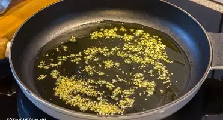

Una receta sencilla, sabrosa y con su imprescindible pizca de perejil.
Hierve agua con sal y cuece la pasta hasta que esté al dente.

Pica el ajo y dóralo suavemente en aceite.
Escurre la pasta y mézclala con el ajo dorado.
Añade una buena pizca de perejil fresco picado y sirve caliente.